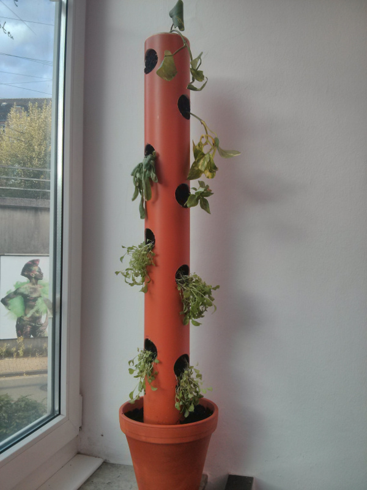

{% block content %}
{% filter markdown|typogrify -%}

Vom 23. bis zum 25. August findet auf dem Gelände der Donnerschweer
Kaserne das Freifeld-Festival statt. Das ist
ein Kulturfestival, auf dem es Ausstellungen, Musik auf Bühnen und in Clubs,
Workshops, Vorträgen und noch mehr gibt. Natürlich kann dort auch gezeltet
werden.
Am Freitag und Samstag ist der Mainframe dort vertreten und präsentiert sich.
Außerdem werden wir einen Workshop
zum Bau eines Salatbaumes anbieten.
Dabei handelt es sich um eine platzsparende Möglichkeit, Salat und andere
Pflanzen in der vertikalen anzupflanzen, damit diese auch Platz auf der
Terrasse oder dem Balkon finden. Die Workshops finden Fr. von 15-17 und Sa von
11-13 und 15-17 Uhr statt. Wer teilnehmen möchte soltle sich bitte im Pad
eintragen, damit wir abschätzen können wieviel Material gebraucht wird. Was
genau der Workshop kosten wird, steht leider noch nicht fest. Wir werden es
aber hier bekanntgeben.
Am Sonntag sind wir nicht mehr vor Ort, da dann auf dem Bahnhofsviertelfest
im eigenen Haus zu tun haben. Dazu seid ihr alle auch herzlich eingeladen.
***UPDATE:*** Die Kosten für den Workshop werden 15€ betragen.
{%- endfilter %}
{% endblock content %}